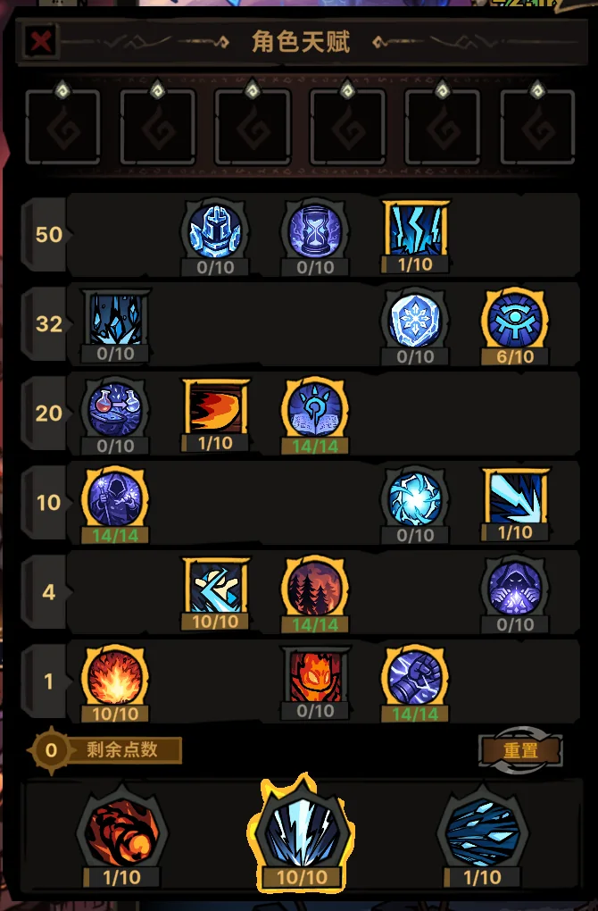
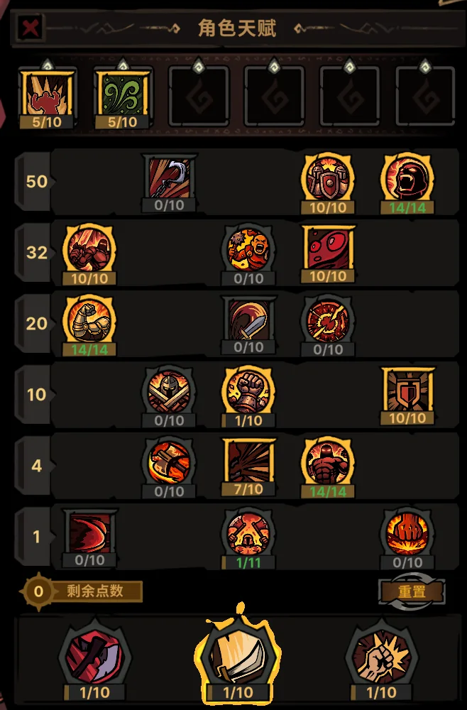
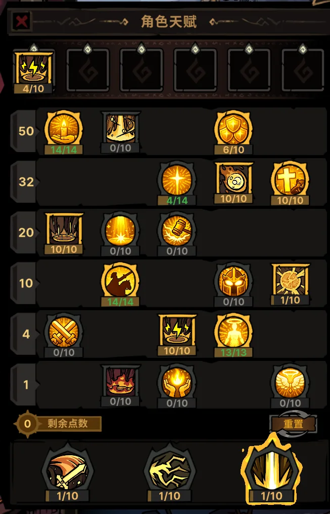

玩家共同维护的构筑资料库
把散落的心得，
整理成一条可走的路。
从技能加点、核心装备到阵容机制，快速找到适合自己的 BD；也可以登记你的方案，让下一位玩家少走弯路。
- 7
- 套构筑
- 7
- 份表格方案
- 84
- 张实装参考
电法 · 输出



三职业闭环 · 稳定推进
00 / CHRONICLE
0.3.2.0 · 古神复苏资料库
古神编年史
收录装备、职业技能、符文、符文之语与关键道具。支持全局搜索、品质和职业筛选，并可打开原始图鉴查看完整属性。
进入编年史
583 条可检索档案
01 / ARCHIVE
构筑图鉴
先看定位，再看门槛。每套 BD 都把最关键的机制、技能和装备放在第一层。
定位
没有找到匹配的构筑
试试更短的关键词，或者登记一套新的 BD。
02 / CONTRIBUTE
一套好 BD，
不只是装备清单。
- 01说明目标
阵容解决什么问题，适合开荒、推进还是高层挑战。
- 02写清机制
哪些技能和装备形成闭环，哪些是不可替代的核心。
- 03标注门槛
把必备、可替换和词条优先级区分开，方便玩家照着做。
你的方案不必完美，
只要足够真实、足够清楚。